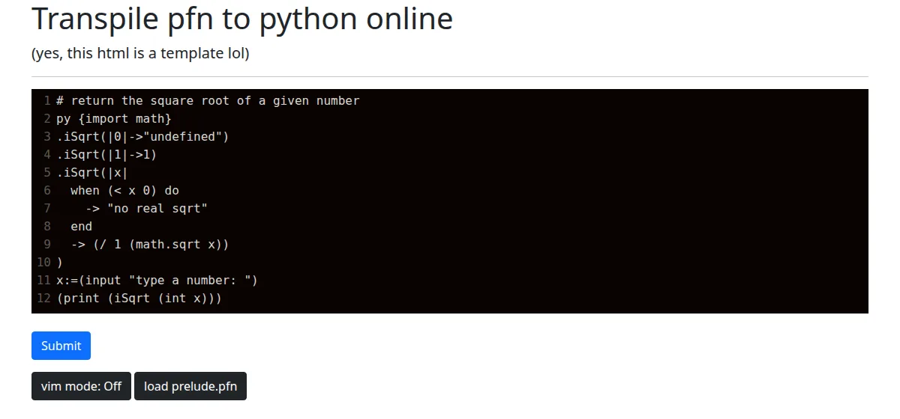
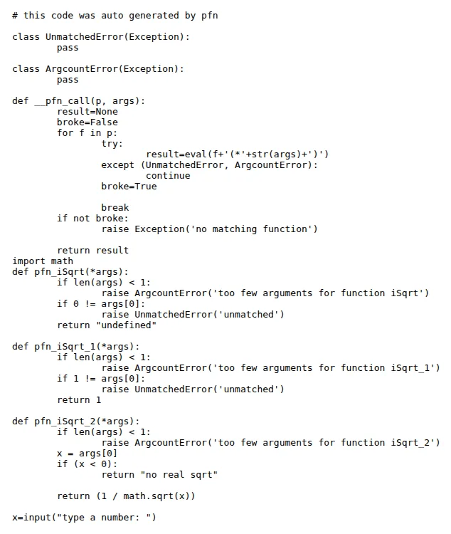
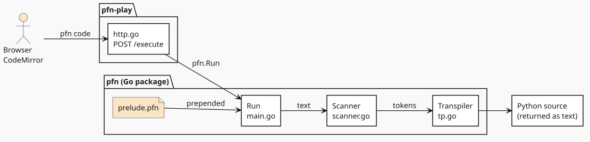
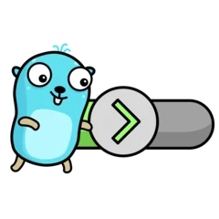
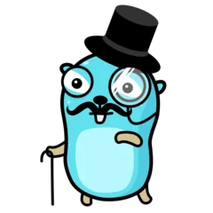
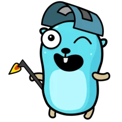
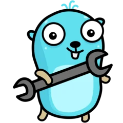
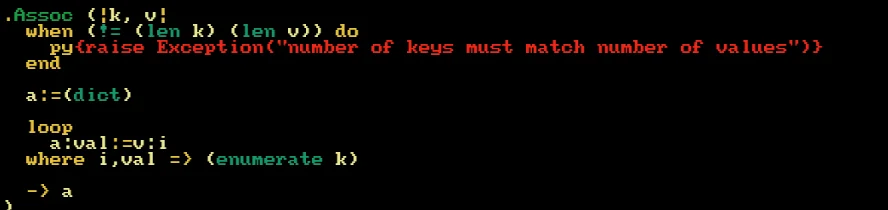

- Role
- Author
- When
- Jun – Aug 2021; playground fixes until May 2022
- Stack
- Go, Python as the target, CodeMirror
What it is
You write functions with .f(|x,y| -> …) and call them as (f x y). A function can be defined several times with literal patterns in its arguments, like Haskell clauses, and when … do … end blocks handle conditions. pfn-play is a Go server with a CodeMirror editor: you type pfn, press Submit, and get back the Python. It used to run on Heroku; the screenshots below are from running it locally.


Design decisions
- Prefix calls, after losing to precedence. I spent two weeks trying to parse
1 + 2 - 2 + 2 / 3 * 2, gave up after a few stack overflows, tried+(x,y), noticed it turned into Lisp once nested, and switched to Lisp-style calls. - Transpile to Python. No interpreter to write: pfn emits Python source, and Python does the running. A
py {…}block drops raw Python in when pfn can't express something. - Pattern matching as a chain of functions. Each definition of
fbecomes its own Python function (pfn_f,pfn_f_1, …) that raisesUnmatchedErrorif its pattern fails. A call tries them in order until one returns. - A parser that tries everything. Each construct is a parser function. They are tried in turn, rewinding on failure, and the error reported is the one from the parser that got furthest.
- The standard library is written in pfn.
prelude.pfnis prepended to every program unless you turn it off.
Code overview
About 1,800 lines of Go. Here is a program going from the editor to Python:

diagrams/pfn.puml).Gophers from the Free Gophers Pack by Maria Letta (fork), licensed CC0. Go gopher designed by Renée French.
pfn-play: the server

Serves the editor and hands the posted code to pfn.Run.
package main
import (
"net/http"
"os"
"github.com/TsukiGva2/pfn"
)
func main() {
port := os.Getenv("PORT")
if port == "" {
port = "8080"
}
http.HandleFunc("/execute", runpfn)
http.Handle("/", http.FileServer(http.Dir("public")))
http.ListenAndServe(":"+port, nil)
}
func runpfn(wr http.ResponseWriter, r *http.Request) {
query := r.URL.Query()
noprelude := false
np, exists := query["noprelude"]
if exists && np[0] == "true" {
noprelude = true
}
res := pfn.Run(r.FormValue("code"), false, noprelude).Output
wr.Write([]byte(res))
}Run
Prepends the prelude, scans, transpiles.
func Run(code string, p bool, noprelude bool, customErrs ...string) Transpiler {
cerrs = customErrs
if !noprelude {
cont, err := ioutil.ReadFile("prelude.pfn")
if err != nil {
panic(err)
}
code = string(cont) + "\n\n" + code
}
sc := Scanner{code, 0, 0, 0, false}
tokens := sc.scanTokens()
//for i := range tokens {
// fmt.Printf("%#v\n", tokens[i])
//}
tp := Transpiler{0, tokens, ""}
tp.start()
if p {
fmt.Print(tp.Output)
}
return tpScanner

A hand-written scanner: one character at a time, peeking ahead for two-character tokens like -> and :=.
func (s *Scanner) scanTokens() []Token {
var tokens []Token
for !s.isAtEnd() {
s.start = s.current
tokens = append(tokens, s.scanToken())
}
tokens = append(tokens, Token{cEOF, "", nil, s.line, s.current})
return tokens
}
func (s Scanner) isAtEnd() bool {
return s.current >= len(s.text)
}
func (s *Scanner) scanToken() Token {
begin:
var c byte
if !s.isAtEnd() {
c = s.advance()
} else {
return s.partialTok(cEOF)
}
switch c {
case '(':
return s.partialTok(cLparen)
case ')':
return s.partialTok(cRparen)
case '{':
return s.getstr('}')
case ',':
return s.partialTok(cComma)
case '.':
return s.partialTok(cDot)
case '-':
return s.partialTok(tern(s.match('>'), cArrow, tern(s.match('='), cMinusEq, cMinus)))
case '+':Trying every parser

The heart of the transpiler: try each parser function, rewind on failure, remember which one got furthest.
func (tp *Transpiler) findMatchingParserFn(fns []parserFn) (string, error) {
/*
Return First Working One
returns the first matching
parsing function on the given
list
*/
old := tp.current
/*
couldn't think of a better name, 'max' is used for
storing the parser function that has taken the most steps,
it is used for setting 'probableCause' later.
*/
var max uint
var probableCause string
var tokenAtErr string
for i := range fns {
res, err := fns[i]()
if err == nil {
return res, nil
}
steps := tp.current - old
if steps >= max {
max = steps
probableCause = err.Error()
tokenAtErr = tp.ctoken().lexeme
}
tp.current = old
}
tp.err("findMatchingParserFn", "no matching pfn for tokens '"+tp.ctoken().lexeme+"' through '"+tokenAtErr+"'\nprobably because of this error: "+probableCause)
return "", errors.New("no matching pfn")
}Functions and patterns

A repeated name gets a numbered suffix, and each literal argument becomes a check that raises UnmatchedError.
f, exists := fns[fname]
oldName := fname
if exists {
fname = fmt.Sprintf("%s_%d", fname, len(f))
}
code = fmt.Sprintf("%sdef pfn_%s(*args):\n", prefix, fname)
code += fmt.Sprintf("\tif len(args) < %d:\n\t\traise ArgcountError('too few arguments for function %s')\n", len(args), fname)
for i := range args {
arg := args[i]
if arg.expr == "_" {
continue
}
if arg.atype == tNormal {
code += fmt.Sprintf("\t%s = args[%d]\n", arg.expr, i)
continue
}
if arg.atype == tTypeAssertN {
exp := arg.expr
argname := exp[:strings.Index(exp, "|")]
texpr := exp[strings.Index(exp, "|")+1:]
code += fmt.Sprintf("\tif type(%s) != type:\n\t\traise Exception('type assertion expression must be a valid type')\n", texpr)
code += fmt.Sprintf("\tif %s != type(args[%d]):\n\t\traise UnmatchedError('unmatched')\n", texpr, i)
code += fmt.Sprintf("\t%s = args[%d]\n", argname, i)
continue
}
if arg.atype == tTypeAssertC {
exp := arg.expr
cmp := exp[:strings.Index(exp, "|")]
texpr := exp[strings.Index(exp, "|")+1:]
code += fmt.Sprintf("\tif type(%s) != type:\n\t\traise Exception('type assertion expression must be a valid type')\n", texpr)
code += fmt.Sprintf("\tif %s != type(args[%d]):\n\t\traise UnmatchedError('unmatched')\n", texpr, i)
code += fmt.Sprintf("\tif %s != args[%d]:\n\t\traise UnmatchedError('unmatched')\n", cmp, i)
continue
}
code += fmt.Sprintf("\tif %s != args[%d]:\n\t\traise UnmatchedError('unmatched')\n", arg.expr, i)
}The runtime
Emitted at the top of every program: __pfn_call tries each version of a function until one doesn't raise.
pfncall := "def __pfn_call(p, args):\n"
pfncall += " result=None\n"
pfncall += " broke=False\n"
pfncall += " for f in p:\n"
pfncall += " try:\n"
pfncall += " result=eval(f+'(*'+str(args)+')')\n"
pfncall += " except (UnmatchedError, ArgcountError):\n"
pfncall += " continue\n"
pfncall += " broke=True\n\n"
pfncall += " break\n"
pfncall += " if not broke:\n"
pfncall += " raise Exception('no matching function')\n\n"
pfncall += " return result\n"The prelude
Library functions written in pfn itself, with a little Python where needed.
.Assoc (|k, v|
when (!= (len k) (len v)) do
py{raise Exception("number of keys must match number of values")}
end
a:=(dict)
loop
a:val:=v:i
where i,val => (enumerate k)
-> a
)History
- 13 Jun 2021First commit: "it works!"
- 14 Jun 2021Basic pattern matching and
whenblocks. - 16 Jun 2021Loops.
- 19 Jun 2021Classes, rewritten several times in early July.
- 27 Jun 2021pfn-play: the language in the browser.
- 10 Jul 2021A
matchconstruct. - 1 Aug 2021Type assertions on function arguments; the last commit to pfn.
- May 2022A last fix to the playground's example:
1/sqrt(0)is undefined, not 0.
The README promised it would be the last language I made.
More pictures

Assoc from the prelude, with pfn's Vim syntax file.